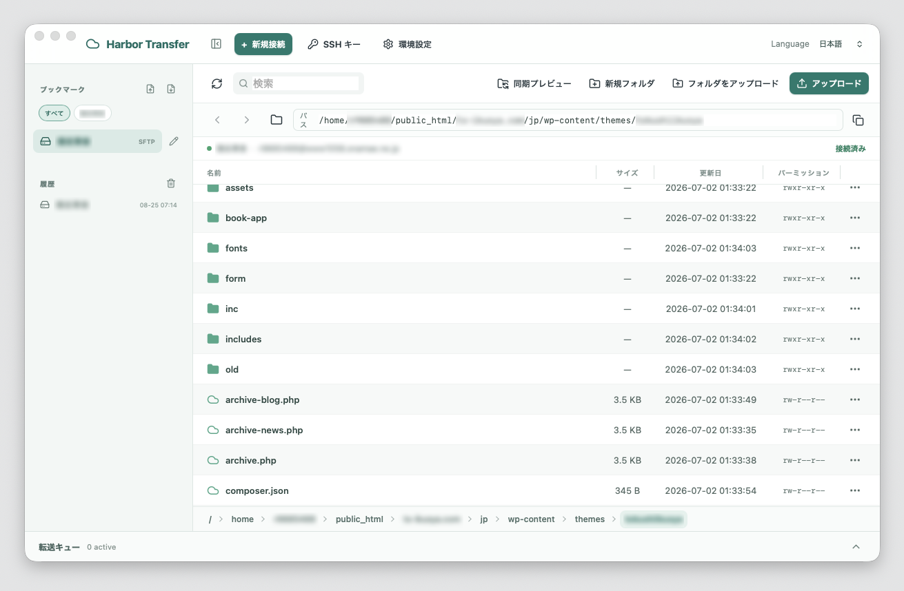

接続先を選ぶ
ブックマークから、いつものサーバーへすぐ接続。


接続から転送、確認までをシンプルにつなぎます。
ブックマークから、いつものサーバーへすぐ接続。
ドラッグ＆ドロップで、ファイルもフォルダも軽やかに。
進捗も再試行もひと目で確認。終わったら静かに閉じます。
Harborの道具箱
接続・認証・編集・同期を、Macらしい操作でまとめて管理できます。
よく使う接続先へすぐアクセス。並べ替えや読み書きもできます。
秘密情報はmacOS Keychainへ。複数の鍵を見分けて切り替えられます。
外部エディタでの更新、安全な同期プレビュー、再開可能な転送をひとつに。
主要なプロトコルとクラウドを、同じファイルブラウザで扱えます。